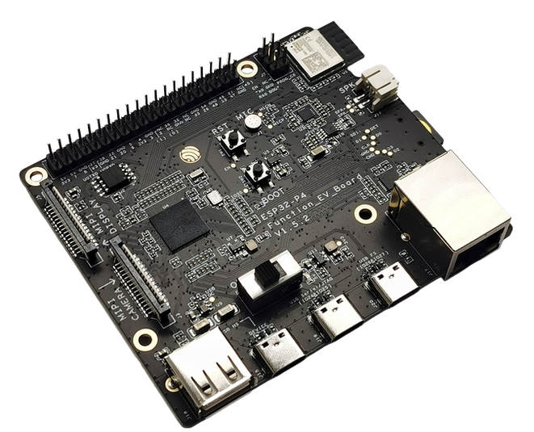

ESP32-P4-Function-EV-Board

ESP32-P4-Function-EV-Board v1.5.2
ESP32-P4-Function-EV-Board is a multimedia development board based on the ESP32-P4 chip. The board pairs ESP32-P4 with external peripherals that showcase its rich feature set, such as USB 2.0, MIPI-CSI/DSI, an H.264 encoder, audio codec, and a 7-inch capacitive touch LCD with a resolution of 1024 x 600.
Additionally, the board integrates a 2.4 GHz Wi‑Fi 6 and Bluetooth LE module
(ESP32-C6-MINI-1) for wireless connectivity. Most I/O pins are broken out to
pin headers for easy interfacing, allowing rapid prototyping for applications such
as smart displays, network cameras, and audio devices.
The board is available in two hardware revisions:
v1.5.2 (current): replaces the external CP2102N USB-to-UART bridge with the ESP32-P4’s built-in USB Serial/JTAG interface, and adds a dedicated USB Full-speed port. This is the recommended revision for new designs.
v1.4 (legacy): uses a CP2102N USB-to-UART bridge chip connected to UART0 (GPIO37/GPIO38) for flashing and serial debugging.
For full board details refer to the official user guides:
Features
Based on ESP32-P4 SoC (RISC-V), featuring powerful image and voice processing
In-package PSRAM (16 MB or 32 MB depending on chip variant)
Rich multimedia I/O: USB 2.0, MIPI-CSI/DSI, H.264 encoder
7” 1024x600 capacitive touch LCD (via adapter board)
On-board audio path: ES8311 codec + NS4150B audio power amplifier
On-board microphone and speaker connector (up to 3 W into 4 Ω)
Expansion header with the majority of GPIOs broken out (header
J1)External wireless module:
ESP32-C6-MINI-1providing Wi‑Fi 6 and BLEMultiple USB-C ports: USB 2.0 OTG High-Speed, USB Full-speed (v1.5.2) or USB Power-in (v1.4), and USB Serial/JTAG (v1.5.2) or USB-to-UART via CP2102N (v1.4) for flashing and debug
Note
Wireless connectivity is provided by the on-board ESP32-C6-MINI-1 module.
The ESP32-P4 itself does not integrate Wi‑Fi/BLE radios.
Display and Camera
The LCD adapter connects to the ESP32-P4 MIPI DSI connector (J3 on adapter). Default control pins on the EV board are:
GPIO27: LCD Reset (RST_LCD)GPIO26: LCD Backlight PWM (PWM)
Connection summary (refer to the user guide for images and full directions):
LCD adapter
J3header → EV-Board MIPI DSI connector (ribbon cable in reverse direction)LCD adapter
RST_LCD(J6) →GPIO27(headerJ1)LCD adapter
PWM(J6) →GPIO26(headerJ1)LCD adapter power: via its USB on
J1or by wiring 5V/GND from the EV-Board
The camera adapter connects to the MIPI CSI connector (ribbon cable in forward direction).
Pin Mapping
Most ESP32-P4 GPIOs are exposed on the header block J1. The EV-Board user
guide documents the full pinout and header numbering; see the “Header Block”
tables in the user guide for details. Selected defaults used on this board:
Pin |
Signal/Function |
Notes |
|---|---|---|
26 |
PWM (LCD backlight) |
Default backlight control |
27 |
RST_LCD (LCD reset) |
Default LCD reset control |
37 |
U0TXD |
Default UART0 TX exposed on header |
38 |
U0RXD |
Default UART0 RX exposed on header |
Power Supply
The board can be powered via any of the USB Type‑C ports. The available ports differ by hardware revision:
v1.5.2: USB 2.0 Type-C Port (OTG High-Speed), USB Full-speed Port, or USB Serial/JTAG Port.
v1.4: USB 2.0 Type-C Port (OTG High-Speed), USB Power-in Port, or USB-to-UART Port (CP2102N bridge).
If the debug cable cannot provide enough current, use a separate power adapter connected to any available USB‑C port.
Installation
Follow the ESP32-P4 chip documentation for toolchain setup and required tools (Espressif ESP32-P4). In summary:
Install a RISC‑V GCC toolchain (e.g., xPack riscv-none-elf-gcc)
Install
esptool.py(pipx install esptoolrecommended or use a venv)Optionally, set up
openocd-esp32for JTAG debugging
Building NuttX
All configurations can be selected using the board identifier with the NuttX build tools. The basic shell configuration:
$ ./tools/configure.sh esp32p4-function-ev-board:nsh
$ make -j$(nproc)
Flashing
Use the standard flashing flow. Replace <port> with the serial device exposed
by the board:
v1.5.2: the USB Serial/JTAG port creates a CDC ACM device, typically
/dev/ttyACM0. Please note that most of the configs use UART0 (GPIO37/GPIO38) as the serial console (except for usbconsole). For UART0-based terminal, an external USB-to-UART bridge is required to be attached to UART0 port (GPIO37/GPIO38) pins and the board requires to be manually set to download mode by pressing the BOOT button and then the RST button (releasing the RST before the BOOT button).v1.4: the on-board CP2102N USB-to-UART bridge creates a USB-serial device, typically
/dev/ttyUSB0.
Connect the appropriate USB‑C port and run:
$ make -j$(nproc) flash ESPTOOL_PORT=<port> ESPTOOL_BINDIR=./
After flashing, connect a serial console at 115200 8N1 to interact with NSH.
Configurations
All of the configurations presented below can be tested by running the following commands:
$ ./tools/configure.sh esp32p4-function-ev-board:<config_name>
$ make -j
Where <config_name> is one of the names listed below (e.g., nsh, adc).
Then use a serial console terminal like picocom configured to 115200 8N1.
adc
Enables the ADC driver. ADC unit(s) are registered (/dev/adc0 as ADC1).
Attenuation, mode, and channel set can be adjusted in ADC Configuration.
autopm
This configuration makes the device automatically enter the low power consumption mode when in the idle state, powering off the cpu and other peripherals.
bmp180
Enables the BMP180 pressure sensor over I2C. Use the bmp180 app to read samples.
capture
Enables the capture driver and the capture example to measure duty cycle/frequency of an external signal.
crypto
Enables cryptographic hardware support for SHA algorithms and a /dev/crypto node.
efuse
Enables the eFuse driver (supports virtual eFuses). Access via /dev/efuse.
ethernet
Enables using the in-chip ethernet MAC controller attached to the board’s PHY pins. This example enables the DHCP client and the ping tool to test the Ethernet connection, which should be working out of the box when the ethernet cable is connected to the board:
nsh> ifconfig
eth0 Link encap:Ethernet HWaddr 30:ed:a0:ec:f1:60 at RUNNING mtu 1500
inet addr:10.0.10.50 DRaddr:10.0.10.1 Mask:255.255.255.0
It also provides the iperf tool to test the Ethernet connection.
gpio
Tests the GPIO driver. Provides examples for output control and edge-triggered interrupts.
i2c
Enables I2C utilities. i2c dev 0x00 0x7f can scan the bus.
i2schar
Enables the I2S character device and i2schar example for TX/RX testing over I2S0.
motor
Enables the MCPWM peripheral for brushed DC motor control (/dev/motor0).
nsh
Basic configuration to run the NuttShell (NSH).
ostest
Runs OS tests from apps/testing/ostest.
pm
This config demonstrate the use of power management.
You can use the pmconfig command to check current power state and time spent in other power states.
Also you can define time will spend in standby and sleep modes:
$ make menuconfig
-> Board Selection
-> (15) PM_STANDBY delay (seconds)
(0) PM_STANDBY delay (nanoseconds)
(20) PM_SLEEP delay (seconds)
(0) PM_SLEEP delay (nanoseconds)
Timer wakeup is not only way to wake up the chip. Other wakeup modes include:
EXT1 wakeup mode: Uses RTC GPIO pins to wake up the chip. Enabled with
CONFIG_PM_EXT1_WAKEUPoption.GPIO wakeup mode: Uses GPIO pins to wakeup the chip. Only wakes up the chip from
PM_STANDBYmode and requiresCONFIG_PM_GPIO_WAKEUP.UART wakeup mode: Uses UART to wakeup the chip. Only wakes up the chip from
PM_STANDBYmode and requiresCONFIG_PM_GPIO_WAKEUP.
Before switching PM status, you need to query the current PM status to call correct number of relax command to correct modes:
nsh> pmconfig
Last state 0, Next state 0
/proc/pm/state0:
DOMAIN0 WAKE SLEEP TOTAL
normal 0s 00% 0s 00% 0s 00%
idle 0s 00% 0s 00% 0s 00%
standby 0s 00% 0s 00% 0s 00%
sleep 0s 00% 0s 00% 0s 00%
/proc/pm/wakelock0:
DOMAIN0 STATE COUNT TIME
system normal 2 1s
system idle 1 1s
system standby 1 1s
system sleep 1 1s
In this case, needed commands to switch the system into PM idle mode:
nsh> pmconfig relax normal
nsh> pmconfig relax normal
In this case, needed commands to switch the system into PM standby mode:
nsh> pmconfig relax idle
nsh> pmconfig relax normal
nsh> pmconfig relax normal
System switch to the PM sleep mode, you need to enter:
nsh> pmconfig relax standby
nsh> pmconfig relax idle
nsh> pmconfig relax normal
nsh> pmconfig relax normal
To save power without using sleep modes, lowering the clock speed is another approach. For dynamic frequency scaling
CONFIG_ESPRESSIF_DFS option needs to enabled and minimum CPU frequency needs to set under CONFIG_ESPRESSIF_MIN_CPU_FREQ option.
With these options, the device scales the CPU clock according to workload.
psram_usrheap
This configuration enables allocating the userspace heap into SPIRAM and reserves the internal RAM for kernel heap. For instance, for a 32MB PSRAM:
nsh> free
total used free maxused maxfree nused nfree name
602004 6492 595512 6872 595512 36 1 Kmem
33554428 4276 33550152 4656 33550152 8 1 Umem
pwm
Demonstrates PWM via LEDC. The pwm app toggles output with default frequency/duty.
qencoder
Enables Quadrature Encoder support via PCNT. The qe sample reads pulses on the configured pins.
random
Demonstrates the hardware RNG.
rmt
Configures an RMT TX/RX pair and the irtest example. Also includes ws2812 for addressable LEDs.
rtc
Demonstrates RTC alarms via the alarm app.
sdm
Enables Sigma-Delta Modulation (SDM) driver for LED dimming/simple DAC; see dac test.
spi
Enables SPI master driver. Loop MOSI↔MISO and run spi exch -b 2 "AB" to verify.
spiflash
Tests the external SPI flash via SPI1. Defaults to SmartFS; see mksmartfs/mount instructions.
spislv
Enables SPI2 Slave mode for testing host-to-device transactions.
temperature_sensor
Enables the internal temperature sensor and related character device/uORB options.
tickless
Enables tickless scheduling for reduced idle power.
timers
Demonstrates general-purpose timers via the timer example.
twai
Enables the Two-Wire Automotive Interface (CAN/TWAI). Loopback testing is available via Kconfig.
ulp
This configuration enables the support for the ULP LP core (Low-power core) coprocessor. To get more information about LP Core please check ULP LP Core Coprocessor docs.
Configuration uses a pre-built binary in Documentation/platforms/risc-v/esp32p4/boards/esp32p4-function-ev-board/ulp_blink.bin
which is a blink example for GPIO0. After flashing operation, GPIO0 pin will blink.
Prebuild binary runs this code:
#include <stdint.h>
#include <stdbool.h>
#include "ulp_lp_core_gpio.h"
#define GPIO_PIN 0
#define nop() __asm__ __volatile__ ("nop")
bool gpio_level_previous = true;
int main (void)
{
while (1)
{
ulp_lp_core_gpio_set_level(GPIO_PIN, gpio_level_previous);
gpio_level_previous = !gpio_level_previous;
for (int i = 0; i < 10000; i++)
{
nop();
}
}
return 0;
}
usbconsole
Tests the USB Serial/JTAG console. On v1.5.2 this uses the ESP32-P4’s built-in
USB Serial/JTAG peripheral exposed on the dedicated USB Serial/JTAG port
(/dev/ttyACM0).
On v1.4, an external cable is required to be attached to USB Serial/JTAG port (GPIO24/GPIO25).
watchdog
Demonstrates MWDT/RWDT watchdog timers via the wdog app.